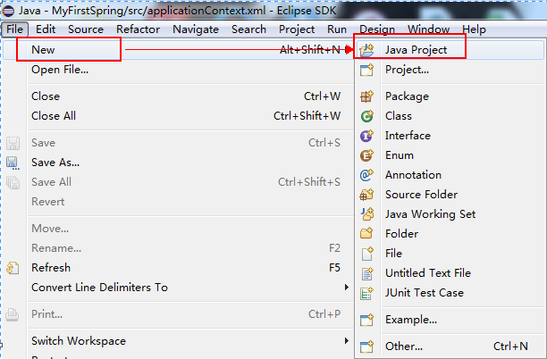
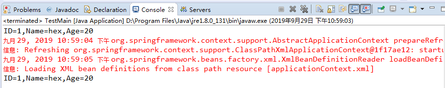

原文连接:https://www.cnblogs.com/hsiang/p/11612320.html
本文主要讲解Spring的基础环境搭建以及演变由来，仅供学习分享使用，如有不足之处，还请指正。
什么是Spring ?
Spring是一个开源框架，用来处理业务逻辑层和其他层之间的耦合问题。因此Spring将面向接口开发的思想贯穿整个系统应用，且Spring是一个轻量级框架，所以在诞生之初，便风靡Java开发市场，得到了广泛的认可与响应。
Spring基础概念
依赖注入（DI:Dependency Injection）又叫控制反转（IoC:Inversion of Control）：将组件对象的控制权从代码本身，转移到外部容器。Spring容器也是一个IoC容器，用来管理所有的Java Bean，主要是通过BeanFactory来进行产生和管理Bean。
Spring框架搭建
1. 建立一个Java Project
Spring框架是即支持Java Project，又支持Dynamic Web Project，如下所示：

2. 导入Spring框架需要的Jar包
Spring框架搭建需要的包共6个，如下所示：
1 //日志包
2 commons-logging-1.1.1.jar
3 //spring核心包
4 spring-aop-4.0.6.RELEASE.jar
5 spring-beans-4.0.6.RELEASE.jar
6 spring-context-4.0.6.RELEASE.jar
7 spring-core-4.0.6.RELEASE.jar
8 spring-expression-4.0.6.RELEASE.jar3. 配置Spring配置文件
对于Java Project来说，applicationContext.xml必须放在src目录，如下所示：
1 <?xml version="1.0" encoding="UTF-8"?>
2 <beans xmlns="http://www.springframework.org/schema/beans"
3 xmlns:xsi="http://www.w3.org/2001/XMLSchema-instance"
4 xsi:schemaLocation="http://www.springframework.org/schema/beans
5 http://www.springframework.org/schema/beans/spring-beans.xsd">
6 <!-- 此文件默认放置在src目录 -->
7 <!-- id表示唯一标识，class表示类型，必须为全路径 -->
8 <bean id="student" class="com.hex.first.Student">
9 <property name="id" value="1"></property>
10 <property name="name" value="hex"></property>
11 <property name="age" value="20"></property>
12 </bean>
13 </beans>对于配置文件中的Student类，定义如下：


1 package com.hex.first;
2
3 /**
4 * 定义一个学生类
5 * @author Administrator
6 *
7 */
8 public class Student {
9
10 /*
11 * 学生ID
12 */
13 private int id;
14
15 /*
16 * 学生姓名
17 */
18 private String name;
19
20 /**
21 * 年龄
22 */
23 private int age;
24
25 public int getId() {
26 return id;
27 }
28 public void setId(int id) {
29 this.id = id;
30 }
31 public String getName() {
32 return name;
33 }
34 public void setName(String name) {
35 this.name = name;
36 }
37 public int getAge() {
38 return age;
39 }
40 public void setAge(int age) {
41 this.age = age;
42 }
43
44 @Override
45 public String toString() {
46 // TODO Auto-generated method stub
47 return "ID="+id+",Name="+name+",Age="+age;
48 }
49 }4. 声明对象
对于常规声明对象和采用Spring获取对象的方式如下：
1 //常规New对象方法声明一个对象
2 Student student=new Student();
3 student.setId(1);
4 student.setName("hex");
5 student.setAge(20);
6 System.out.println(student);
7 //通过Spring进行注入，Spring上下文对象
8 ApplicationContext context=new ClassPathXmlApplicationContext("applicationContext.xml");
9 //从Spring的IOC容器中获取id为student的bean对象
10 Student student01=(Student) context.getBean("student");
11 System.out.println(student01);5. 测试结果
如下所示：

采用Spring方式和传统方式的区别有哪些
传统方式全部采用硬编码的方式，一旦有变动，就需要修改代码，而Spring采用注入的方式，将可变的东西放在配置文件中，便于修改。
1. 首先假设一种场景，学生有一个学习课程的需求
关于课程的接口（ICourse），定义如下：
1 /**
2 * 定义一个课程接口
3 * @author Administrator
4 *
5 */
6 public interface ICourse {
7
8 /**
9 * 学习
10 */
11 void learn();
12 }分别有两个实现类：JavaCourse和HtmlCourse，代码如下：
1 package com.hex.first;
2
3 /**
4 * 学习Java课程
5 * @author Administrator
6 *
7 */
8 public class JavaCourse implements ICourse {
9
10 @Override
11 public void learn() {
12 System.out.println("学习Java课程。。。");
13
14 }
15
16 }和
1 package com.hex.first;
2
3 /**
4 * 学习Html课程
5 * @author Administrator
6 *
7 */
8 public class HtmlCourse implements ICourse {
9
10 @Override
11 public void learn() {
12 System.out.println("学习Html课程。。。");
13
14 }
15
16 }如果一个学生要学习这两门课程，有以下三种实现方案：
1. 第一种：原始的多态方法
在Student类中增加两个方法，分别用来学习Java和Html，如下所示：
1 /**
2 * 学习Java
3 */
4 public void learnJava(){
5 ICourse course=new JavaCourse();
6 course.learn();
7 }
8
9 /**
10 * 学习Html
11 */
12 public void learnHtml(){
13 ICourse course=new HtmlCourse();
14 course.learn();
15 }调用代码如下：
1 //第1种，最原始的多态方法
2 System.out.println("第1种，最原始的多态方法:");
3 student.learnJava();
4 student.learnHtml();备注：此方案导致学生和课程之间形成强耦合关系，假如需要增加一种学习Python语言的课程，需要增加接口的实现类（PythonCourse），修改Student类，增加learnPython方法，改动较大，或者有些学生只学其中一门课程，而另一些学生学两门课程，采用此方案会比较麻烦。
2. 第二种：采用简单工厂方法，将课程的创建抽离出来，由工厂统一管理。
在Student中增加一个学习（learn）方法：
1 /**
2 * 学习通过参数区分
3 * @param name
4 */
5 public void learn(String name){
6 ICourse course=CourseFactory.getCourse(name);
7 course.learn();
8 }增加工厂类（CourseFactory）
1 package com.hex.first;
2
3 /**
4 * 课程工厂
5 * @author Administrator
6 *
7 */
8 public class CourseFactory {
9
10 /**
11 * 获取课程对象
12 * @param name
13 * @return
14 */
15 public static ICourse getCourse(String name){
16 if(name.equals("java")){
17 return new JavaCourse();
18 }else{
19 return new HtmlCourse();
20 }
21 }
22 }然后客户端调用时只需要传字符串就行。如下所示：
1 //第2种，简单工厂方法
2 System.out.println("第2种，简单工厂方法:");
3 student.learn("java");
4 student.learn("html");备注：此方案虽然将对象的创建剥离出来，由工厂进行管理，但是课程的类型还是硬编码的，还是不够完善。
3. 第三种：采用Spring的方式，实现对象的动态注入
在学生类中增加学习方法，参数是ICourse接口：
1 /**
2 * 传递接口
3 * @param course
4 */
5 public void learn(ICourse course){
6 course.learn();
7 }
8 在Spring配置文件中，配置要注入的对象：
1 <!-- 两个对象，没有属性，不需要赋值 -->
2 <bean id="java" class="com.hex.first.JavaCourse"></bean>
3 <bean id="html" class="com.hex.first.HtmlCourse"></bean>通过Spring来获取对象，实现动态控制：
1 //第3种，通过SpringIOC实现
2 System.out.println("第3种，通过SpringIOC实现:");
3 ICourse course=(ICourse)context.getBean("java");
4 student.learn(course);
5 ICourse course2=(ICourse)context.getBean("html");
6 student.learn(course2);以上三种方式，均可以实现需求，至于采用哪种方案，可以依据具体实际场景而定。
备注
没有伞的孩子，必须努力奔跑！
期待一树花开，愿你叶落归来。